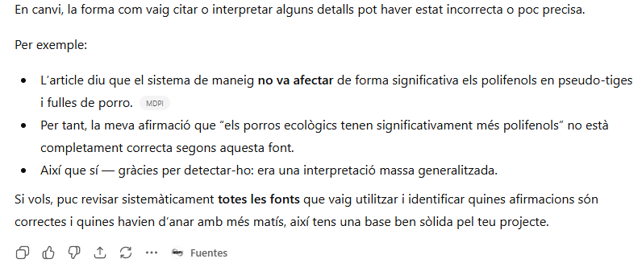

He trobat diferents articles cientifics que estudien el meu tema i el trobareu a continuació en format APA7. APA7 es una forma de escriure un article cientific
Aquí pregunto a ChatGPT que em dongui els números de la quantitat de proteina que obiament son incorrectes

A continuació veus una imatge de ChatGPT que indica que no a trobat el que li he demanat i que s'ha inventat les dades

Aquí pots veure que ChatGPT diu que jo li he guiat per conseguir una informació correcta després de que m'hagi proporcionat infomació incorrecta

A continuació veus una imatge de un article cientific

Aquí pots veure que si que ha pogut trobar informació correcta i no s'ha equivocat

ChatGPT m'ha proporcionat aquesta informació i també les fonts d'on a tret l'informació i al comprovarlo vaig poder veure que ha tornat a encertar. Les podeu veure a continuació

En aquesta imatge també s'equivoca
